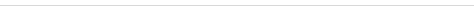
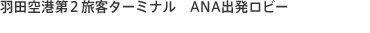
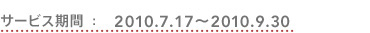
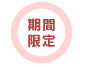

・体験版ダウンロード…DSソフトの体験版をダウンロードして、
電源を切るまでの間、楽しむことができます。
・ニンテンドーWi-Fiコネクション…対応ソフトを使って、遠く離れたプレイヤーと対戦したり、追加コンテンツをダウンロードしたりできます。
・DSiショップ…ニンテンドーDSi専用ソフト「ニンテンドーDSiウェア」をダウンロード購入し、DSi本体に保存することができます。有料のソフトではニンテンドーDSiポイントが必要です。
・ニンテンドーWi-Fiコネクション…対応ソフトを使って、遠く離れたプレイヤーと対戦したり、追加コンテンツをダウンロードしたりできます。
・DSiショップ…ニンテンドーDSi専用ソフト「ニンテンドーDSiウェア」をダウンロード購入し、DSi本体に保存することができます。有料のソフトではニンテンドーDSiポイントが必要です。

全日空の「ANAでDS」キャンペーンの一環として、羽田空港第2旅客ターミナルにあるANA出発ロビーにて、2010年7月17日から9月30日までの期間限定でニンテンドーゾーンが利用できます。ニンテンドーWi-Fiコネクションや体験版ダウンロードのほかにも、オリジナルコンテンツがたくさん！ 空港や飛行機についてのクイズ「ANA航空検定」やパイロットやキャビンアテンダントに関するレポート「ANAお仕事図鑑」、旅行券が当たるアンケートなどを楽しめます。
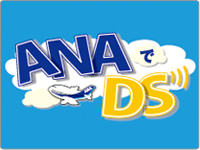
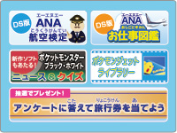
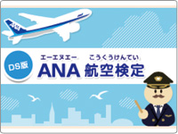
この夏、東京−札幌、東京−沖縄の一部の便で、たくさんのポケモンたちがペイントされた「ポケモンジェット」を運航しています。これを記念して、羽田空港のニンテンドーゾーンでは、DSで歴代のポケモンジェットの写真が見られる「ポケモンジェットライブラリー」をオープン。また、8月10日までの期間中に『ポケットモンスター』シリーズのDS用ソフトをお持ちのお客様には、ポケモン「サトシのピカチュウ」をプレゼント。 9月に発売予定のDS用ソフト『ポケットモンスターブラック・ホワイト』の最新情報を楽しめるニュース＆クイズも必見です。
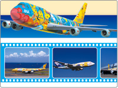
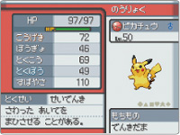
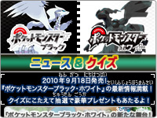
©2010 Pokémon. ©1995-2010 Nintendo/Creatures Inc./GAME FREAK inc.
©Nintendo・Creatures・GAME FREAK・TV Tokyo・ShoPro・JR Kikaku
©Pokémon ©2010 ピカチュウプロジェクト
ポケットモンスター・ポケモン・Pokémonは任天堂クリーチャーズ・ゲームフリークの登録商標です。
©Nintendo・Creatures・GAME FREAK・TV Tokyo・ShoPro・JR Kikaku
©Pokémon ©2010 ピカチュウプロジェクト
ポケットモンスター・ポケモン・Pokémonは任天堂クリーチャーズ・ゲームフリークの登録商標です。
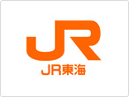
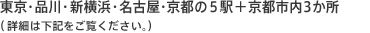
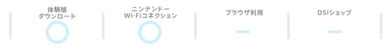
・体験版ダウンロード…DSソフトの体験版をダウンロードして、
電源を切るまでの間、楽しむことができます。
・ニンテンドーWi-Fiコネクション…対応ソフトを使って、遠く離れたプレイヤーと対戦したり、追加コンテンツをダウンロードしたりできます。
・ニンテンドーWi-Fiコネクション…対応ソフトを使って、遠く離れたプレイヤーと対戦したり、追加コンテンツをダウンロードしたりできます。
おなじみの「そうだ 京都、行こう。」キャンペーン、そして「東海道新幹線でDS」キャンペーンの一環として、2010年7月17日から8月31日まで、東京駅・品川駅・新横浜駅・名古屋駅・京都駅の新幹線コンコース待合室でニンテンドーゾーンが利用できます。ニンテンドーWi-Fiコネクションや体験版ダウンロードから、新幹線の豆知識を学べる「しんかんせんものしりはかせ」などのオリジナルコンテンツ、そしてKIOSKやお弁当販売店のオススメ商品・クーポン情報などを楽しめます。
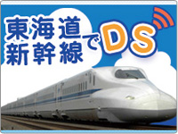
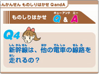
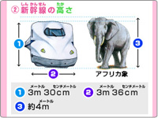
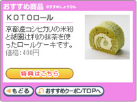
「東海道新幹線でDS」のキャンペーン期間中、オリジナルグッズがもらえる「おうぎをつくろうラリー」が開催されています。
1）東海道新幹線下り線の乗車駅（東京駅・品川駅・新横浜駅・名古屋駅のいずれか）
2）東海道新幹線下り線の降車駅（京都駅）
3）京都市内（「清水順正 おかべ家」「京都国際マンガミュージアム」「東映太秦映画村」のいずれか）
以上の3カ所で入手できる「おうぎのかけら」を順番に3種類集めておうぎを完成すると、JR東海オリジナル記念品（画面クリーナー）と賞状がもらえます。また、「おうぎのかけら」ポイントに行くだけで、駅構内のお店でさまざまな特典も受けられます。
1）東海道新幹線下り線の乗車駅（東京駅・品川駅・新横浜駅・名古屋駅のいずれか）
2）東海道新幹線下り線の降車駅（京都駅）
3）京都市内（「清水順正 おかべ家」「京都国際マンガミュージアム」「東映太秦映画村」のいずれか）
以上の3カ所で入手できる「おうぎのかけら」を順番に3種類集めておうぎを完成すると、JR東海オリジナル記念品（画面クリーナー）と賞状がもらえます。また、「おうぎのかけら」ポイントに行くだけで、駅構内のお店でさまざまな特典も受けられます。
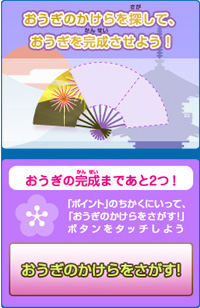